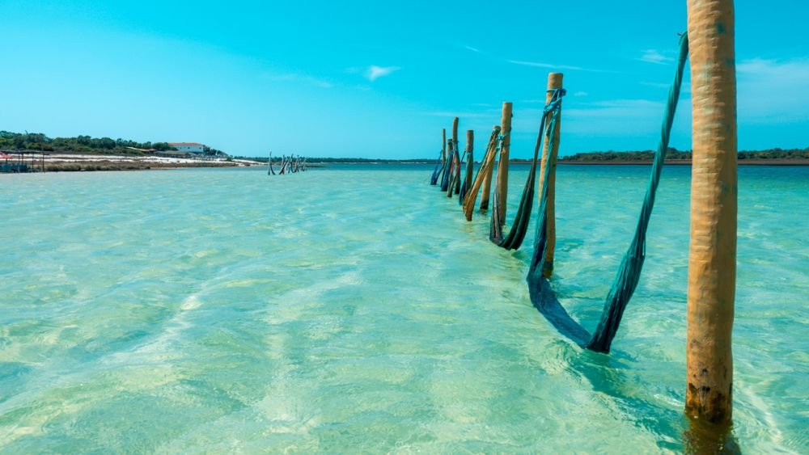

Praias Incríveis para Conhecer no Nordeste
Data da publicação:
O litoral nordestino é famoso por suas paisagens naturais impressionantes, com águas claras, areia branca e um clima tropical perfeito para aproveitar o mar.
Locais como Jericoacoara, Porto de Galinhas, Maragogi e Pipa são destinos muito procurados por turistas que desejam relaxar, mergulhar em piscinas naturais ou simplesmente apreciar o pôr do sol à beira-mar.
